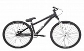

Велосипед STARK Pusher
Описание

Stark Pusher — горный велосипед на колёсах 27,5 дюймов — отличный выбор для начинающих гонщиков кросс-кантри. Крепкая алюминиевая рама с усиленным рулевым стаканом, оборудована передней мягкой вилкой от лидера рынка амортизационных вилок Rock Shox. Вилка имеет хороший вес, прочность, блокировку хода, настраивается под вес велосипедиста. Тормозная система велосипеда оснащена новым гидравлическим, дисковым тормозом AVID DB1, который соответствуют верхнему уровню любительского катания. Чёткое переключение передач и хорошие разгонные характеристики обеспечивает оборудование фирмы SHIMANO, переключатели группы DEORE и шифтеры ALIVIO. Сделайте первый шаг к победам в кросс-кантри с горным велосипедом 27,5 — Stark Pusher.
Характеристики
| Бренд |
STARK |
| Год |
2015 |
| Рама |
AL 6061 double |
| Вилка |
Rock Shox 100mm |
| Диаметр колес |
27,5 |
| Количество скоростей |
27 |
Купить!